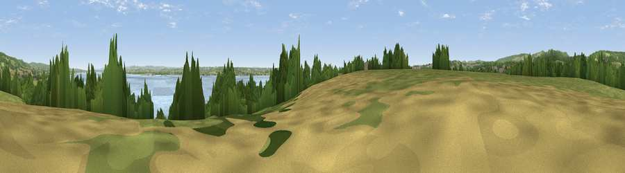

Viewpoint near Sedbury
#24879 in England · top 46% of its area beats it · near SedburyThe view, rendered

A 360° render of this exact spot computed from the terrain model, tree cover and land cover — summer colours, afternoon light, calibrated against photographs of famous viewpoints. Real trees, hedges and buildings will differ in detail.
The panorama
Grey silhouette: terrain skyline in each direction (720 bearings, Earth curvature and refraction included). Dashed green: skyline with trees (+15 m) and buildings (+8 m) as obstacles. Blue strip: how far the ground is visible on each bearing.
Where the view opens
Wedge length = distance to the farthest visible ground on that bearing (vegetation-aware). Rings at 10, 25 and 50 km.
What fills the view
43% water · 28% grassland · 16% woodland · 11% cropland · 2% built-up
Angular shares of the visible panorama (visual magnitude), not map area. Landscape diversity 0.58 (0–1 Shannon).
Key numbers
More beautiful places nearby
The staircase of upgrades: each row has a higher view potential than everything closer. Driving times are estimates from straight-line distance, calibrated against real road routing — check an actual route before setting out.
| Place | Direction | Drive | Score |
|---|---|---|---|
| Viewpoint near Sedbury | SSW · 1 km | ~3 min | 49.4 |
| Viewpoint near Woodcroft | NW · 2 km | ~6 min | 59.1 |
| Viewpoint near Tidenham | N · 2 km | ~6 min | 64.6 |
| Viewpoint near Woolaston | NNE · 6 km | ~12 min | 66.1 |
| Viewpoint near Hewelsfield | NNE · 7 km | ~14 min | 69.6 |
| Viewpoint near Hewelsfield | NNE · 7 km | ~15 min | 70.7 |
| Viewpoint near Yorkley | NNE · 15 km | ~27 min | 70.9 |
| Buck Stone | N · 18 km | ~31 min | 71.0 |
51.64463, -2.63909 · source: screening · position refined by local search. Computed location — check access rights before visiting.